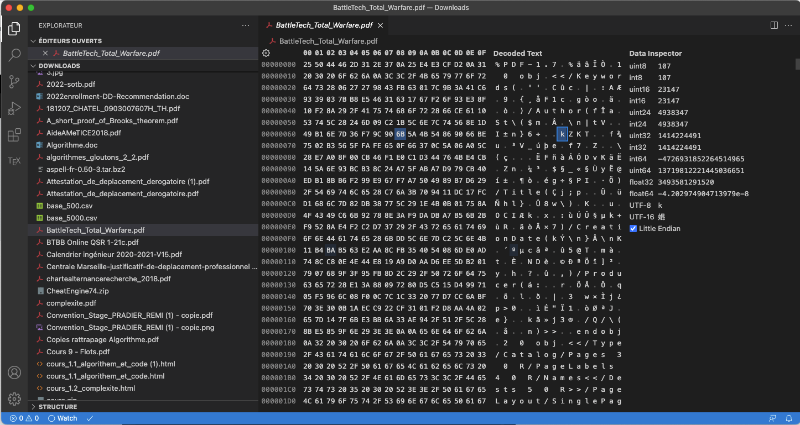

Fichiers
Stocker des données est une préoccupation depuis les origines de l'informatique : d'abord sur cartes perforée, puis sur bandes magnétiques et jusqu'aux disques durs et clés actuelles. Un fichier est ainsi un ensemble de données que l'on peut lire ou écrire pour le sauvegarder. Nous n'entrerons cependant pas dans les détails des systèmes de fichiers (comment sont effectivement stockés les fichiers sur le disque dur), car c'est une affaire (très) compliquée. Nous n'aborderons que le strict nécessaire pour les manipuler en python.
Toutes les manipulations spécifiques des fichiers (buffer, impossibilité de modifier, etc) sont issues des origines de l'informatique où stocker et charger des données était une chose compliquée physiquement (voir par exemple le chargement d'un programme depuis une cassette sur un TO7 qui prenait plus d'un quart d'heure... Et c'est du vécu, le TO7 a été ma première machine)
Système de fichiers
Un fichier est constitué d'une suite de blocs sur le disque dur, chaque bloc ayant une adresse contenant le bloc suivant. C'est une liste chaînée de tableaux de même taille contenant les données (des octets).
Ce format a été choisi parce que :
- des fichiers de tailles différentes doivent pouvoir être ajoutés et supprimés du disque dur. La place y est donc fragmentée, et il n'est pas sûr de pouvoir avoir la taille requise pour un fichier.
- on doit pouvoir ajouter des choses à un fichier sans avoir à tout re-écrire
Les limitations sont donc :
- on accède au fichier petit à petit. Il faut une tête de lecture qui voyage de bloc en bloc.
- il est impossible d'insérer des choses dans un fichier. On peut juste ajouter des éléments à la fin de celui-ci.
- le système de fichier dépend du système d'exploitation.
- écrire/lire sur un disque est coûteux en temps. Il est nécessaire d'avoir une mémoire tampon ce qui rend asynchrone la lecture et l'écriture d'un fichier.
Ce qu'on peut faire avec un fichier :
- ouvrir le fichier : c'est se préparer à l'utiliser. Cette étape crée un buffer (mémoire tampon), un pointeur de bloc, une tête de lecture, etc.
- fermer un fichier : arrêter de s'en servir. Il est indispensable de toujours fermer un fichier après s'en être servi. On écrit en effet à cette étape les dernières instruction non encore passées du buffer au disque dur (c'est comme démonter une clé USB proprement).
- lire un fichier : on fait avancer la tête de lecture du fichier, d'une ligne ou d'un nombre donné d'octets
- écrire un fichier : on ajoute des données à la fin d'un fichier (qui peut être initialement vide). Souvent on écrit pas tout de suite sur le disque dur, on attend d'avoir un nombre suffisant de données dans la mémoire tampon.
Au niveau de l'ordinateur, utiliser un fichier, c'est compliqué.
Types de fichiers
On a coutume de séparer les fichiers en deux grandes familles : les fichiers texte et les fichiers binaires. Cette séparation, essentiellement historique, est un peu artificielle mais vous trouverez encore souvent cette distinction :
- Les fichiers binaires sont les plus nombreux puisque c'est presque tous les fichiers : les images, vidéos, programmes, etc. Il faut un outil spécial pour les utiliser, c'est à dire un moyen de passer de l'octet à sa signification. On peut aider l'utilisateur en mettant une extension à son nom correspondant au type de fichier, mais ce n'est pas obligatoire.
- Les fichiers textes sont eux aussi constitués de nombres (un ordinateur ne connaît que ça), mais on peut leur faire correspondre des caractères via un code (voir partie format).
Passer des octets à leurs significations pour un fichier se fait via un codec (codeur/décodeur). Il y en a pour les fichiers binaire codec MPEG4 par exemple, mais aussi pour les fichiers texte même si dans ce cas là on parlera plutôt d'encodage (comme utf-8).
Voir un fichier
Savoir comment interpréter les données d'un fichier n'est pas une chose facile. L'extension permet au système d'exploitation d'associer une application spécifique (un visualiseur d'image si le fichier fini par ".jpg" par exemple). Mais ce n'est qu'une indication. Un fichier python ne se transforme pas par magie en image si on ajoute une extension ".jpg" au fichier...
Utilisez toujours une extension à vos fichiers. Cela permet de gagner beaucoup de temps pour ouvrir directement la bonne application pour lire votre fichier.
Sans extension ou sans idée de ce que contient un fichier, ce n'est qu'une suite d'octets. Pour s'en rendre compte :
Installez l'extension Hex Editor pour vscode.
Vous pourrez la trouver dans le menu menu Affichage > extension puis recherchez Hex Editor dans la barre de recherche pour l'installer.
Cette extension permet d'ouvrir tout fichier comme la suite d'octet qu'il est réellement. Pour cela :
- ouvrez une nouvelle fenêtre avec vscode : menu Fichier > nouvelle fenêtre
- dans cette nouvelle fenêtre : menu Affichage > explorateur puis cliquez sur open folder pour choisir un dossier contenant des images, des pdf et d'autres types de de fichiers (souvent le dossier téléchargement est un bon candidat)
- cliquez droit sur un fichier et choisissez ouvrir avec...

- choisissez "Hex editor"

- on obtient quelque chose en 3 parties : les octets, l'interprétation ascii de chaque octet et des informations ;

Certains type de fichiers sont reconnaissables par leurs premiers octets. On appelle ça des magic number ou des signatures. Si vous ouvrez un fichier pdf par exemple, vous remarquerez qu'il commence par les caractères ASCII : %PDF-. Mais ce n'est pas la norme. Donc pour vous éviter des soucis, pensez à bien bien les extensions de fichier pour aider votre système d'exploitation à trouver la bonne application à ouvrir.
Python
En python, on utilise les fichiers via un objet file. On manipule les fichiers en 3 temps :
-
ouverture :
f = open("mon_fichier.txt", "r")
Ces objets sont créés par la commandeopenqui ouvre un fichier. Elle a deux paramètres obligatoires :- le nom du fichier,
- la façon dont on veut l'ouvrir :
'r': en lecture. La tête de lecture est placée au début du fichier'w': en écriture. La tête d'écriture est placée au début du fichier. Donc si le fichier contenait déjà des choses elles sont supprimées'a': en écriture à la fin du fichier. La tête d'écriture est placée à la fin du fichier. Donc si le fichier contenait déjà des choses elles ne sont pas supprimées
Par défaut, les fichiers sont considérés comme étant du texte écrit en utf-8. Si vous voulez ouvrir/écrire un fichier binaire, il faut ajouter
'b'au paramètre. Par exemple :f = open("mon_image.jpg", "br")ouvre un fichier binaire en lecture. -
On manipule ensuite le fichier grâce aux méthodes de la classe
file:- en lecture avec les méthodes :
read:texte = f.read()qui lit tout le fichier sous la forme d'une chaîne de caractèresreadlinequi lit la ligne suivante d'un fichier
- en écriture avec
write:
- en lecture avec les méthodes :
-
enfin, on ferme le fichier :
f.close()
Si vous ouvrez un fichier en écriture alors qu'il existait déjà, son contenu disparaît immédiatement et pour toujours. Il n'y a aucun moyen de récupérer son contenu.
Exemple
Créez un fichier texte que vous nommerez "haiku.txt" et qui contient :
dans le vieil étang,
une grenouille saute,
un ploc dans l'eau.
Bashô.
Lecture du fichier en entier
Exécutez le code suivant pour lire le fichier qui doit être dans le même dossier que votre fichier python :
f = open("haiku.txt", "r") # ouverture d'un fichier texte en lecture dans le même dossier que le fichier python
poeme = f.read()
f.close()
print(poeme)
Ne confondez pas le nom du fichier et son contenu. Le nom du fichier, ici "haiku.txt", nous permet de l'ouvrir en lecture grâce à la commande open. Son contenu est ensuite mis dans la variable poeme grâce à la méthode read.
Lecture ligne à ligne
Exécutez le code suivant pour lire le fichier ligne à ligne :
f = open("haiku.txt", "r")
for ligne in f: # boucle sur les lignes
print(ligne)
f.close()
Notez la ligne vide vide entre deux affichages. Ceci est du au fait que chaque ligne du fichier contient déjà un retour à la ligne. Plus celui qui est ajouté automatiquement à la fin de l'instruction python.
Ajout au fichier
Exécutez le code suivant pour ajouter quelque chose à la fin d'un fichier :
f = open("haiku.txt", "a")
f.write("\n")
f.write("1644-1694")
f.close()
On ajoute un retour à la ligne, puis les dates de naissance et de mort de Bashô.
Notez qu'aller à la ligne est un caractère comme un autre (il s'écrit \n et vaut U+0010). Il fait parti des caractères de contrôles comme la tabulation ou le bip (essayez par exemple print(chr(0x7))).
Écriture du fichier
Exécutez le code suivant pour remplacer le contenu du fichier :
f = open("haiku.txt", "w")
f.write("Noël est aux portes\n")
f.write("les dindes et les pintades\n")
f.write("rentrent dans les fours")
f.write("\n")
f.write("Salim Bellen")
f.close()
Une fois ouvert le fichier en écriture tout son contenu précédent est perdu.
Utilisation de with
Vous verrez parfois l'utilisation du mot clé python with qui permet d'écrire :
with open("haiku.txt", "a") as f:
f.write("\n")
f.write("1644-1694")
- au début du bloc
withle résultat de l'ouverture du fichier est appeléf - A la fin du bloc
withon fermef - s'il y a des erreurs, c'est également le bloc
withqui s'en occupe pour nous.
Fichier binaire
Pour ouvrir un fichier binaire sous python, on utilise le caractère 'b' suivi de ce que l'on veut faire avec.
L'exemple suivant ouvre le fichier haiku.txt en lecture sous la forme d'un fichier binaire, puis place le contenu de celui-ci dans la variable x
>>> f = open("haiku.txt", "br")
>>> x = f.read()
En regardant le type de x (avec la commande type(x)) :
>>> type(x)
On se rend compte que ce n'est pas une chaîne de caractères, mais un bytes (une suite d'octets). En l'affichant on voit que les accents ne passent pas :
>>> print(x)
b"dans le vieil \xc3\xa9tang,\nune grenouille saute,\nun ploc dans l'eau.\n\nBash\xc3\xb4.\n"
Quand python affiche des suites d'octets, il essaie de les écrire en ascii et pour tous les caractères qu'il ne comprend pas (ici les accents car ils sont codés sur 2 octets en utf-8), il écrit juste le nombre sous format hexadécimal \xc3 par exemple. De plus, il fait commencer l'affichage par un b pour bien montrer que ce n'est PAS une chaîne de caractère.
On peut ensuite transformer les bytes x en autre chose, ici en utf-8 puisque c'était l'encodage :
>>> texte = x.decode("utf-8")
En affichant le texte, on voit que c'est bien notre poème (car c'est notre poème !) :
>>> print(texte)
dans le vieil étang,
une grenouille saute,
un ploc dans l'eau.
Bashô.
Manipulation des dossiers et des fichiers
Par défaut python va chercher les fichiers à ouvrir dans le dossier du fichier python en train d'être exécuté. On peut facilement chercher un fichier dans un dossier spécifique en python.
Commencez par intégrer la règle d'or :
On ne présuppose jamais de l'endroit où un fichier est stocké sur un ordinateur.
Supposons que vous ayez un fichier python dans le dossier /Users/fbrucker/Documents/mon_projet/main.py et que ce programme python utilise le fichier /Users/fbrucker/Documents/mon_projet/donnees.txt.
Si votre programme main.py utilise le fichier donnees.txt de cette façon :
donnees = open("/Users/fbrucker/Documents/mon_projet/donnees.txt").read()
Il ne pourra fonctionner que sur votre ordinateur ! En effet, si vous copiez le dossier "mon_projet" et tout son contenu de l'ordinateur A à l'ordinateur B, il est très peu probable qu'il soit placé au même endroit sur le disque dur.
Une première solution est d'utiliser un chemin relatif :
donnees = open("donnees.txt").read()
On voit que le chemin utilisé est relatif car il ne commence pas par un "/". On cherche le fichier donnees.txt par rapport au dossier courant du terminal qui a exécuté le fichier python. De là, si vous êtes dans le dossier "mon_projet" lorsque vous tapez la commande python main.py votre programme marchera sur tous les ordinateurs.
Si cette technique fonctionne souvent, elle n'est cependant pas optimale car vous ne pouvez pas garantir que votre programme sera toujours exécuté depuis le dossier "mon_projet". S'il est par exemple exécuté depuis le parent de "mon_projet" : python mon_projet/main.py ; votre code ne fonctionnera plus puisque le dossier par défaut ne sera plus le bon...
La solution qui fonctionne tout le temps est de déterminer à l'exécution l'emplacement du fichier*"main.py"*. Ceci se fait grâce à la variable spéciale : __file__.
Copiez le code suivant dans un fichier et exécutez le pour voir le fonctionnement de la variable __file__ :
print(__file__)
On a fait que la moitié du chemin, puisque l'on a l'emplacement du fichier, mais pas le dossier. Ceci peut se faire en utilisant le module os.path de python :
Copiez le code suivant dans un fichier et exécutez le pour voir comment récupérer le dossier à partir de __file__ :
import os
print(__file__) # le chemin absolu jusqu'au fichier
print(os.path.dirname(__file__)) # le dossier
print(os.path.basename(__file__)) # le nom du fichier
Cette méthode permet d'obtenir un chemin absolu de référence pour garantir l'accès aux fichiers de données sur toutes les machines où votre projet sera copié.
Un fois un dossier de référence trouvé, on pourra l'utiliser pour accéder à nos données. Mais jamais à la main :
Lorsque l'on manipule des fichiers ou que l'on combine des dossiers on utilise toujours une bibliothèque dédiée pour cela, on ne manipule jamais les noms de fichiers et de dossiers en utilisant des méthodes de chaines de caractères
On va voir deux façon de faire en python, l'une classique avec le module os.path, l'autre plus moderne qui utilise le module pathlib.
Module os.path
On suppose que la variable __file__ corresponde au chemin "/Users/fbrucker/Documents/mon_projet/main.py" sur le disque dur. On suppose aussi que le module os a été importé.
- rendre le dossier où est
__file__avec dirname :dossier = os.path.dirname(__file__). - rendre le nom du fichier pointé par
__file__avec basename :nom_fichier = os.path.basename(__file__) - concaténer deux chemins avec join :
os.path.join("/Users/fbrucker", "Documents/mon_projet")rendra :/Users/fbrucker/Documents/mon_projet - rendre le dossier parent :
os.path.join(dossier, ".."). - rendre le chemin absolu à partir d'un chemin relatif :
os.path.abspath(".")
Module pathlib
Le module pathlib permet d'avoir une approche objet de la manipulation des fichiers. Le tuto suivant est parfait pour vous montrer comment l'utiliser : https://jefftriplett.com/2017/pathlib-is-wonderful/.
Fichiers distants
Les fichiers stockés sur internet peuvent aussi être récupérés en python via leur url. On utilise la bibliothèque requests (python -m pip install requests).
Par exemple, le site https://www.gutenberg.org possède de nombreux livres au format utf-8 à télécharger. Par exemple https://www.gutenberg.org/ebooks/14155 :
import requests
page = requests.get("https://www.gutenberg.org/ebooks/14155.txt.utf-8")
texte = page.text
Une fois téléchargé, le fichier est décodé selon le format donné dans la requête (ici utf-8), voir page.encoding.
Un petit tuto vous montrant quelques paramètres du module requests :
https://www.tutorialspoint.com/downloading-files-from-web-using-python
Données au format texte
Lorsque l'on manipule des données, On essaye toujours :
- d'enregistrer ses données dans un fichier texte que l'on peu simplement consulter avec un éditeur de texte
- on utilise un format de stockage connu plutôt que d'inventer son format, cela permet d'utiliser des bibliothèque de traitement de données classiques.
Plutôt que d'écrire simplement un fichier texte contenant nos données, on préférera les structurer dans un format permettant de les relire simplement. On en conseille deux :
- les fichiers csv pour des données de type tableaux excel
- les fichiers json pour des données structurées en fiches.
Nous ne l'étudierons pas ici, mais la plupart du temps, lorsque l'on utilise des données on ne le fait pas la main, mais en utilisant une bibliothèque. En analyse des données, on utilise intensivement la bibliothèque pandas.